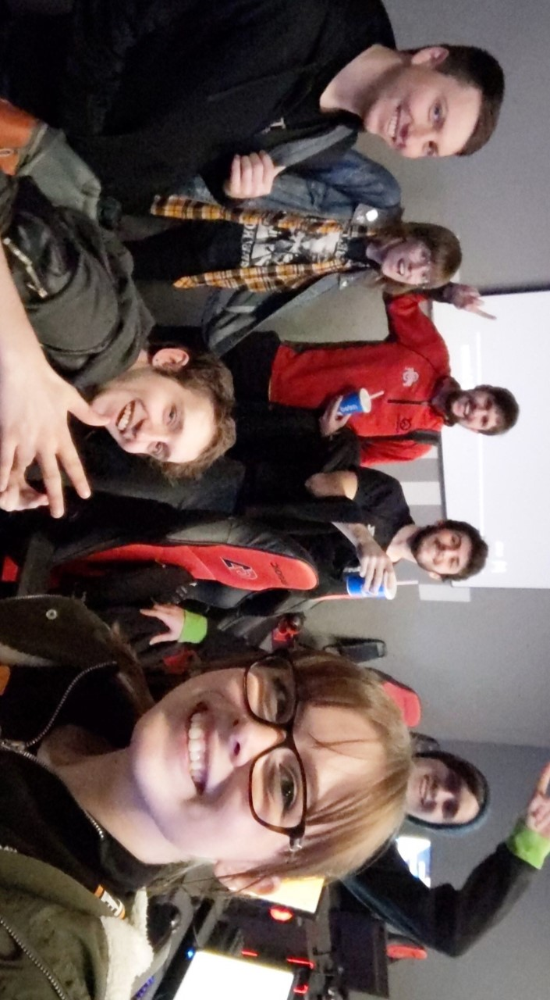
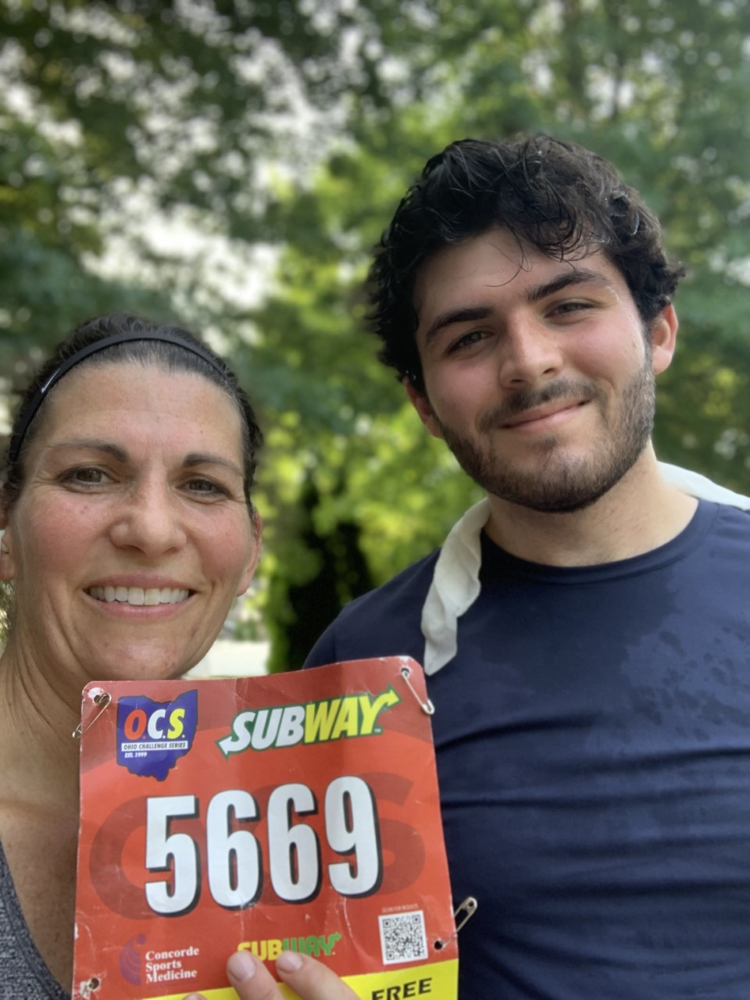
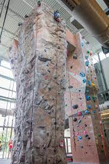

Languages I've worked with
Overview
This website is a career portfolio along with a way to demonstrate some of my skills. The portfolio gives a small introduction About Me and includes my current Resume, a collection of my Projects, my Career Goals and a way to Contact Me. If you find any bugs on the website feel free to contact me on my Discord. I'm always looking for ways to improve so feel free to use those outlets to give me some tips as well. The best way to reach me for hiring/buisness inquiries is at LEvans18Dev@gmail.com. Thanks for stopping by and hope you enjoy the site!
Outside of Coding
-
Esports
I started playing video games young and have met many great people because of it. In college I played for the Ohio State Overwatch team as a main tank. The team was at one point in my Sophomore season rated top 5 in the country for collegiate.
 -
Running
Running is one of my favorite things to do to help me destress. I ran track in high school but stopped for almost 2 years after but I recently started again. The picture below is after the 2 mile 4th of July run that North Canton holds each year.
 -
Climbing
I recently picked up rock climbing thanks to a friend. The image below is of OSU's ARC facility's rock climbing walls. I've been having a lot of fun and highly recommend it.
 -
Music
Music has a big part in my life. There are not many times in my day that I'm not listening to music. I'm always looking for new songs and artists and always open for recommendations.